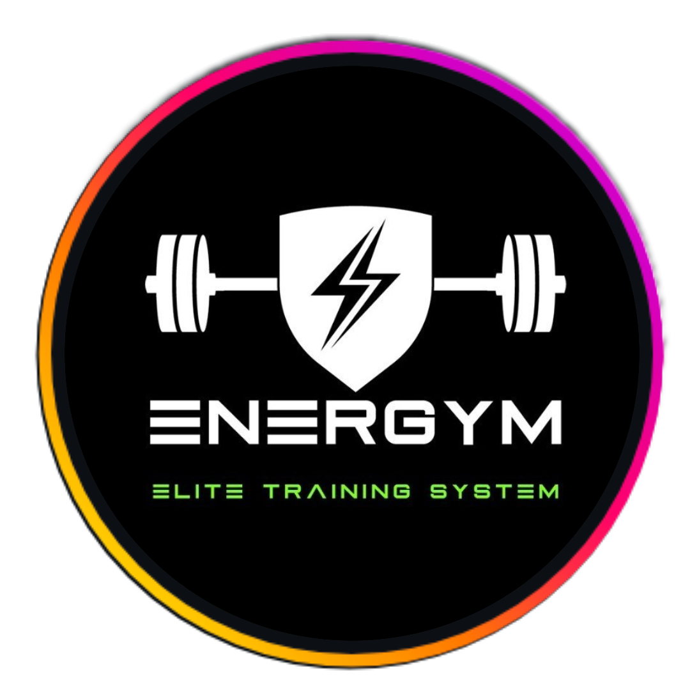
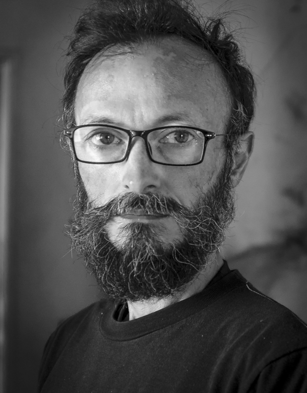

Sistema de captación · Piloto 90 díasUn sistema completo para Energym: anuncios en Meta, seguimiento de cada consulta y un panel donde se ve qué genera resultados y qué no.
Diagnóstico
Cuatro problemas concretos que frenan el crecimiento. El sistema existe para resolverlos uno por uno.
Las consultas llegan por WhatsApp e Instagram, pero muchas se quedan en el camino sin convertir. Sin un proceso claro, cada consulta perdida es un socio que no entró.
No hay forma de saber cuántas personas consultaron, cuántas visitaron el gym ni cuántas terminaron inscribiéndose. Sin esos números, es imposible saber qué mejorar.
Sin publicidad paga, el alcance está limitado a la audiencia que ya existe. No hay forma de atraer socios nuevos de forma sistemática más allá de los seguidores actuales.
El costo de producir posteos para Instagram existe, pero sus resultados son invisibles. No hay forma de medir qué genera socios y qué no.
La Brecha
El sistema cierra esa distancia en tres meses. Cada columna representa una realidad concreta, antes y después.
Cómo funciona
Cinco pasos que llevan a alguien que ve un anuncio a convertirse en socio de Energym.
Una persona ve el anuncio en Instagram o Facebook, segmentado por zona, edad e interés. Es el primer contacto real con Energym.
Hace clic y llega a una página diseñada para convertir. Deja su nombre, contacto y objetivo — bajar de peso, ganar masa, recuperación. Todo queda registrado automáticamente.
El interesado recibe un email confirmando que su consulta llegó. Energym recibe una notificación al instante. Sin demoras ni pasos manuales.
En el panel, cada persona tiene un estado: consultó → agendó visita → visitó → se inscribió. En todo momento se sabe en qué punto está cada interesado.
La inscripción queda registrada con el plan elegido y el anuncio de origen. Con esa información, los anuncios se optimizan solos para traer más personas con el mismo perfil.
El Sistema Nivel 2
Seis componentes que trabajan juntos. Cada uno tiene una función específica — ninguno es decorativo.
Diseñada y construida para Energym. Cuando alguien deja sus datos, quedan registrados automáticamente: nombre, contacto, objetivo y anuncio de origen.
Un sistema propio donde queda toda la información de quienes consultan y de los socios actuales, con estado claro en cada etapa del proceso.
Un panel privado, solo para Energym. De un vistazo: cuántas personas consultaron, visitaron, se inscribieron y desde qué anuncio llegaron.
Google Analytics 4 para el comportamiento en la página. Microsoft Clarity para ver cómo interactúan los visitantes. Meta Pixel para conectar cada acción con la campaña.
Segmentación, audiencias, creatividades y 3 a 5 anuncios iniciales. Los videos los graba el equipo de Energym desde el gym — con directrices claras. Los ajustes son remotos.
El interesado recibe confirmación inmediata. Energym recibe aviso de cada nuevo contacto. Todo sin intervención manual.
La cultura del dato
| Qué se mide y con qué herramienta | Para qué sirve en concreto |
|---|---|
Alcance y rendimiento de anuncios |
Saber cuántas personas vieron cada anuncio, cuántas hicieron clic y cuánto costó cada resultado. Permite pausar lo que no funciona y concentrar el presupuesto en lo que trae socios. |
Conversiones desde anuncios |
Conecta cada consulta o inscripción con el anuncio que la generó. El algoritmo aprende qué perfiles convierten mejor y mejora la entrega automáticamente. |
| Google Analytics 4 Comportamiento en la página |
Muestra cuántas personas entran, cuánto tiempo se quedan y cuántas completan el formulario. Permite detectar si la página convierte bien o necesita ajustes. |
| Microsoft Clarity Mapas de calor y sesiones |
Registra dónde hacen clic, hasta dónde hacen scroll y dónde abandonan. Muestra exactamente qué frena a un interesado antes de completar el formulario. |
| SEO Posicionamiento en buscadores |
Hace que Energym aparezca cuando alguien busca "gimnasio en Marindia" en Google. Más posicionamiento significa más visitas orgánicas sin pagar por anuncios. |
| AEO Visibilidad en búsquedas de IA |
Optimiza el contenido para que cuando alguien le pregunte a ChatGPT o Perplexity "¿dónde hay un gimnasio en Marindia?", Energym aparezca como respuesta. El SEO de la nueva era. |
| CRM Estado de cada lead |
Registra en qué etapa está cada interesado: consultó → agendó → visitó → se inscribió. Permite actuar a tiempo sobre quienes se quedaron a mitad de camino. |
| CRM Tasa de conversión por etapa |
Detecta en qué paso exacto se pierde la mayoría para actuar sobre ese punto específico y mejorar el proceso. |
| CRM Tiempo promedio entre etapas |
Cuántos días pasan entre la consulta y la visita, o entre la visita y la inscripción. Si ese tiempo es largo, algo en el proceso está frenando la decisión. |
| CRM Plan elegido y objetivo del socio |
Saber qué planes se venden más y qué perfil convierte mejor. Define hacia quién apuntar con los anuncios y cómo ajustar la oferta. |
| CRM Tasa de retención de socios |
Cuántos socios renuevan vs. cuántos se van. Un socio que se queda vale más que uno que entra y sale — y la retención también se mejora con datos. |
| CRM Costo real por socio nuevo |
Suma pauta + gestión + producción y lo divide entre inscriptos. El número más importante para saber si el sistema es rentable y cuánto se puede escalar. |
| Futuro Preguntas frecuentes del chatbot |
Registra qué preguntan los interesados antes de inscribirse. Esa información mejora la página, los anuncios y la atención presencial. |
| Futuro Encuestas de satisfacción |
Captura por qué eligieron Energym, qué los frenó y por qué se van los que no renuevan. Alimenta decisiones sobre precios, servicios y comunicación. |
| Futuro Email marketing |
Comunicación directa con socios e interesados. Todo medible: tasa de apertura, clics y conversiones por campaña. |
El Piloto — 90 días
El piloto está estructurado para que Energym tenga datos reales, no promesas, al final de cada fase.
Inversión
La inversión tiene tres componentes claros. Nada está oculto — cada número tiene una justificación.
La meta
Esta es la meta que Energym se ha fijado. El sistema está diseñado para construir el camino hacia ese número, con medición real en cada etapa.
El embudo muestra las etapas del proceso, no proyecciones garantizadas. El piloto de 90 días construye la infraestructura y genera los primeros datos reales para avanzar hacia esa meta.
Quién está detrás

Fundador de Blue-IA · IA + Marketing para negocios locales en Uruguay
Analista de Datos (UCU), Ingeniería de IA. Realizador audiovisual. Veinte años como fotoperiodista enseñan a leer situaciones rápido y a contar historias que generan confianza. Hoy aplico eso — junto con sistemas de IA y marketing digital — para que negocios como Energym crezcan con datos reales, no con suposiciones.
No soy una agencia. Soy una persona que construye el sistema, lo entrega funcionando y se queda para que genere resultados.
Extensión opcional — Nivel 3
Una vez que el sistema de captación está funcionando, se puede sumar un asistente virtual que atiende las 24 horas en la web de Energym.
Próximo paso
Una reunión presencial donde Energym puede ver el sistema en acción, hacer todas las preguntas y decidir con información completa.